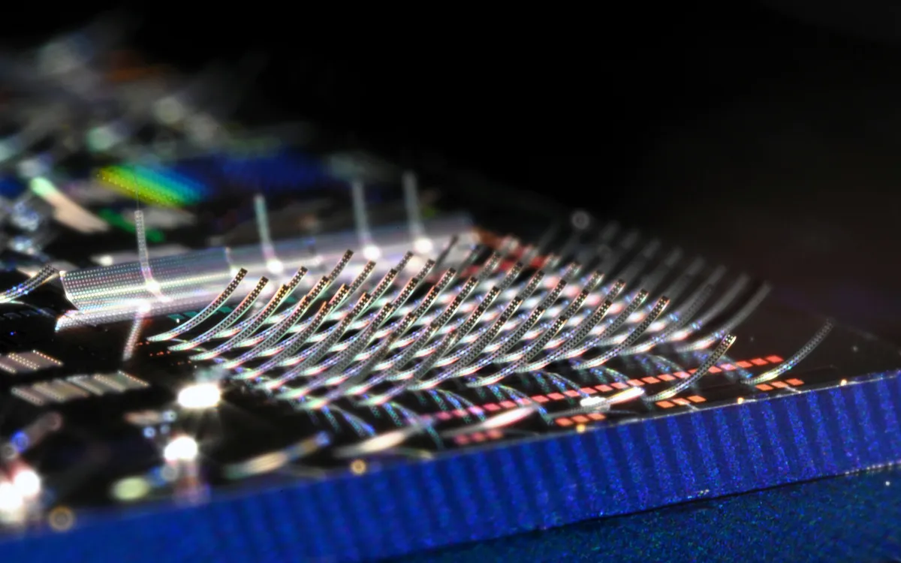
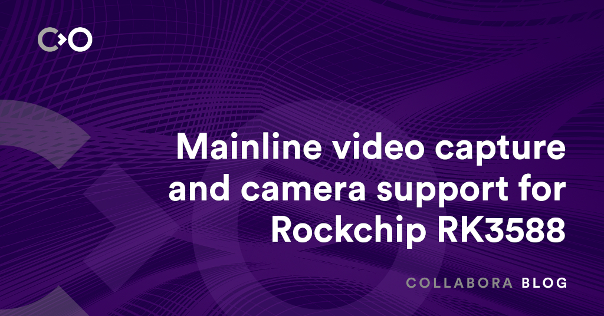

THE FRONT PAGE
EDITOR'S NOTE: As we trade the rigorous certainty of formal proof for the probabilistic convenience of statistical guessing, we might finally learn if a foundation built on 'close enough' can actually support the weight of our ambitions. #The transition from deterministic engineering to stochastic approximation.
Theorems once reserved for human intuition are now being cracked by large language models, but the tradeoff—opaque reasoning chains and a quiet shift from proof to probability—has mathematicians questioning whether this is progress or surrender. Early results suggest a 37% success rate on open problems from the *Annals of Mathematics*, though no one can fully explain *how*.

By manipulating light through microscopic physical movement rather than purely solid-state switching, this MEMS architecture offers a path to ultra-dense projection, though the inherent fragility of moving parts introduces a classic reliability trade-off that modern fabrication often avoids.
By synthesizing its founder's persona for internal query response, Meta risks substituting genuine organizational feedback with a curated statistical average of leadership. This move signals a shift where executive accessibility is no longer a human obligation but a scalable software feature.
The Rust-based engine's migration to a standard registry signals a shift from a monolithic research project toward a tool for developers who still care about memory safety. While it offers a modern alternative to the Blink-Webkit duopoly, integrating a browser engine into a lightweight binary remains a heavy tax on build times and complexity.
The open-source GAIA framework lets engineers deploy AI agents on local hardware, sidestepping cloud dependencies and latency. The tradeoff? Debugging distributed edge logic just got harder, and not every team has the ops discipline to pull it off cleanly.
By mapping YouTube’s unstructured audio into the Model Context Protocol, Mcptube attempts to salvage utility from the noise of video platforms. It offers a bridge for LLMs to ingest visual information without the bandwidth tax of raw pixels, though relying on automated transcripts risks inheriting the hallucinations already baked into the source's metadata.

Collabora is chipping away at the proprietary blobs surrounding Rockchip’s flagship SoC, moving camera and video capture support into the mainline kernel. It is a slow, manual reclamation of hardware that reminds us how much 'modern' development relies on opaque vendor stacks.
MODEL RELEASE HISTORY
No confirmed model releases were detected for this edition date.